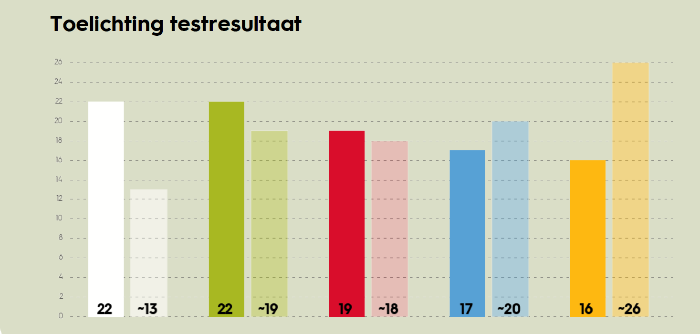

Kleurentest
De veranderkleuren geven inzicht in vijf bestaande veranderparadigma’s. Je kunt immers vanuit verschillende perspectieven en veronderstellingen naar mensen, organisaties, vraagstukken en interacties kijken. De veranderkleuren zijn twintig jaar geleden ontwikkeld door prof. dr. Léon de Caluwé en dr. Hans Vermaak en zijn sindsdien intensief gebruikt, getest, gegroeid en gedeeld zowel in de praktijk als de wetenschap. Ik heb deze test gedaan en hieronder staan mijn testuitslagen met bijbehorende uitleg.
